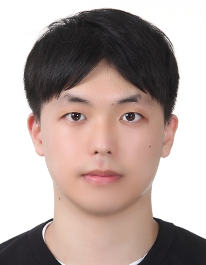
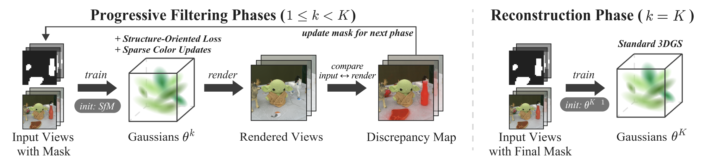
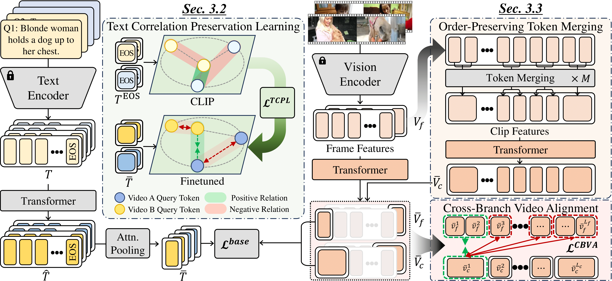
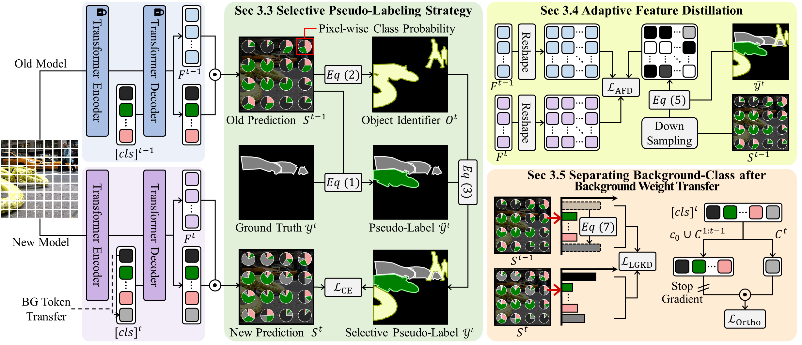

Tae-Young Kim
I am a Ph.D. student at the Visual Computing Lab, Sungkyunkwan University (SKKU), advised by Prof. Jae-Pil Heo. My research focuses on 3D reconstruction, particularly 3D Gaussian splatting. If you are interested in my research, please feel free to contact me by email.

Publications
-

PDF-GS: Progressive Distractor Filtering for Robust 3D Gaussian Splatting
Kangmin Seo, MinKyu Lee, Tae-Young Kim, ByeongCheol Lee, JoonSeoung An, and Jae-Pil Heo
IEEE/CVF Conference Computer Vision and Pattern Recognition (CVPR [Findings]), 2026
-

Mitigating Semantic Collapse in Partially Relevant Video Retrieval
WonJun Moon*, MinSeok Jung*, Gilhan Park, Tae-Young Kim, Cheol-Ho Cho, Woojin Jun, Jae-Pil Heo
(*: equal contribution)
The Thirty-ninth Annual Conference on Neural Information Processing Systems (NeurIPS), 2025
-

Mitigating Background Shift in Class-Incremental Semantic Segmentation
Gilhan Park, WonJun Moon, SuBeen Lee, Tae-Young Kim, and Jae-Pil Heo
European Conference on Computer Vision (ECCV), 2024
Education & Research
- Sungkyunkwan University (SKKU) - Advisor: Prof. Jae-Pil Heo
Ph.D.student, Dept of Artificial Intelligence
Aug. 2026 – Present
- Sungkyunkwan University (SKKU) - Advisor: Prof. Jae-Pil Heo
M.S., Dept of Artificial Intelligence
GPA: 4.00 / 4.5
Mar. 2024 – Aug. 2026
- Sungkyunkwan University (SKKU)
Department of Software
GPA: 4.03 / 4.5
Mar. 2018 – Feb. 2024
Awards & Honors
- Industry-academic cooperation project challenge award
SKKU with Autosemantics, Inc.
Fall 2021